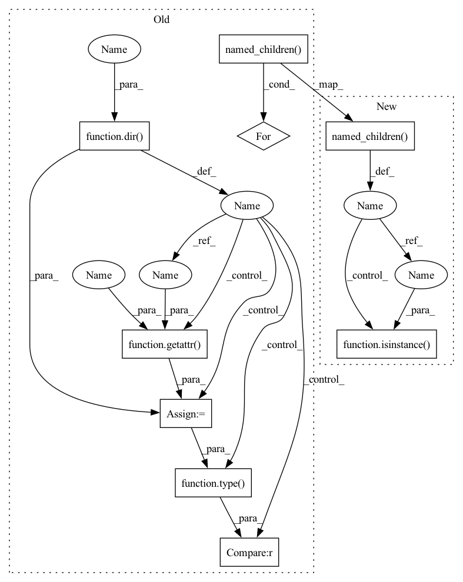

Pattern ID :24389
Before Change
def set_bn_to(m, name="", phase="train"):
for attr_str in dir(m ) :
target_attr = getattr(m , attr_str )
if type(target_attr) == BatchNorm2d :
if phase == "train":
target_attr.train()
// print("setting to train..")
else:
target_attr.eval()
for n, ch in m.named_children():
set_bn_to(ch, n, phase=phase)
def set_brn_to_eval(m, name=""):After Change
def set_bn_to(m, name="", phase="train"):
for target_name, target_attr in m.named_children() :
if isinstance(target_attr , torch.nn.BatchNorm2d) :
if phase == "train":
target_attr.train()
else:In pattern: SUPERPATTERN
Frequency: 5
Non-data size: 9
Instances Fragment ID: 75717507
Project Name: vlomonaco/ar1-pytorch
Commit Name: 0f4126e8f770997ad6e5a0b3f753c29770183679
Time: 2020-04-28
Author: gabriele.graffieti@unibo.it
File Name: utils.py
M Class Name: AnonimousClass
N Class Name: AnonimousClass
M Method Name: set_bn_to(3)
N Method Name: set_bn_to(3)
M Parent Class:
N Parent Class:
M File Name: utils.py
N File Name: utils.py
M Start Line: 344
M End Line: 355
N Start Line: 349
N End Line: 356
Before Change
def change_brn_pars(
m, name="", momentum=0.1, r_d_max_inc_step=0.0001, r_max=1.0,
d_max=0.0):
for attr_str in dir( m) :
target_attr = getattr( m, attr_str)
if type(target_attr) == BatchRenorm2D :
target_attr.momentum = torch.tensor((momentum), requires_grad=False)
target_attr.r_max = torch.tensor(r_max, requires_grad=False)
target_attr.d_max = torch.tensor(d_max, requires_grad=False)
target_attr.r_d_max_inc_step = r_d_max_inc_step
for n, ch in m.named_children():
change_brn_pars(ch, n, momentum, r_d_max_inc_step, r_max, d_max)
def consolidate_weights(model, cur_clas):After Change
def change_brn_pars(
m, name="", momentum=0.1, r_d_max_inc_step=0.0001, r_max=1.0,
d_max=0.0):
for target_name, target_attr in m.named_children() :
if isinstance( target_attr, BatchRenorm2D) :
target_attr.momentum = torch.tensor(momentum, requires_grad=False)
target_attr.r_max = torch.tensor(r_max, requires_grad=False)
target_attr.d_max = torch.tensor(d_max, requires_grad=False) Fragment ID: 75717506
Project Name: vlomonaco/ar1-pytorch
Commit Name: 0f4126e8f770997ad6e5a0b3f753c29770183679
Time: 2020-04-28
Author: gabriele.graffieti@unibo.it
File Name: utils.py
M Class Name: AnonimousClass
N Class Name: AnonimousClass
M Method Name: change_brn_pars(6)
N Method Name: change_brn_pars(6)
M Parent Class:
N Parent Class:
M File Name: utils.py
N File Name: utils.py
M Start Line: 257
M End Line: 268
N Start Line: 257
N End Line: 265
Before Change
def set_brn_to_eval(m, name=""):
for attr_str in dir( m) :
target_attr = getattr( m, attr_str)
if type(target_attr) == BatchRenorm2D :
target_attr.eval()
// print("setting to train..")
for n, ch in m.named_children():
set_brn_to_eval(ch, n)
def freeze_up_to(model, freeze_below_layer, only_conv=False):After Change
def set_brn_to_eval(m, name=""):
for target_name, target_attr in m.named_children() :
if isinstance( target_attr, BatchRenorm2D) :
target_attr.eval()
else:
set_brn_to_eval(target_attr, target_name) Fragment ID: 75717505
Project Name: vlomonaco/ar1-pytorch
Commit Name: 0f4126e8f770997ad6e5a0b3f753c29770183679
Time: 2020-04-28
Author: gabriele.graffieti@unibo.it
File Name: utils.py
M Class Name: AnonimousClass
N Class Name: AnonimousClass
M Method Name: set_brn_to_eval(2)
N Method Name: set_brn_to_eval(2)
M Parent Class:
N Parent Class:
M File Name: utils.py
N File Name: utils.py
M Start Line: 357
M End Line: 365
N Start Line: 341
N End Line: 345
Before Change
def replace_bn_with_brn(
m, name="", momentum=0.1, r_d_max_inc_step=0.0001, r_max=1.0,
d_max=0.0, max_r_max=3.0, max_d_max=5.0):
for attr_str in dir( m) :
target_attr = getattr( m, attr_str)
if type(target_attr) == torch.nn.BatchNorm2d :
// print("replaced: ", name, attr_str)
setattr(m, attr_str,
BatchRenorm2D(
target_attr.num_features,
gamma=target_attr.weight,
beta=target_attr.bias,
running_mean=target_attr.running_mean,
running_var=target_attr.running_var,
eps=target_attr.eps,
momentum=momentum,
r_d_max_inc_step=r_d_max_inc_step,
r_max=r_max,
d_max=d_max,
max_r_max=max_r_max,
max_d_max=max_d_max
)
)
for n, ch in m.named_children():
replace_bn_with_brn(ch, n, momentum, r_d_max_inc_step, r_max, d_max,
max_r_max, max_d_max)
After Change
def replace_bn_with_brn(
m, name="", momentum=0.1, r_d_max_inc_step=0.0001, r_max=1.0,
d_max=0.0, max_r_max=3.0, max_d_max=5.0):
for child_name, child in m.named_children() :
if isinstance( child, torch.nn.BatchNorm2d) :
setattr(m, child_name, BatchRenorm2D(
child.num_features,
gamma=child.weight, Fragment ID: 75717509
Project Name: vlomonaco/ar1-pytorch
Commit Name: 2279fa28177325d092a11e5db69984d6b2d3afc0
Time: 2020-04-27
Author: gabriele.graffieti@unibo.it
File Name: utils.py
M Class Name: AnonimousClass
N Class Name: AnonimousClass
M Method Name: replace_bn_with_brn(8)
N Method Name: replace_bn_with_brn(8)
M Parent Class:
N Parent Class:
M File Name: utils.py
N File Name: utils.py
M Start Line: 233
M End Line: 257
N Start Line: 233
N End Line: 251
Before Change
def set_brn_to_train(m, name=""):
for attr_str in dir( m) :
target_attr = getattr( m, attr_str)
if type(target_attr) == BatchRenorm2D :
target_attr.train()
// print("setting to train..")
for n, ch in m.named_children():
set_brn_to_train(ch, n)
def set_bn_to(m, name="", phase="train"):After Change
def set_brn_to_train(m, name=""):
for target_name, target_attr in m.named_children() :
if isinstance( target_attr, BatchRenorm2D) :
target_attr.train()
else:
set_brn_to_train(target_attr, target_name) Fragment ID: 75717508
Project Name: vlomonaco/ar1-pytorch
Commit Name: 0f4126e8f770997ad6e5a0b3f753c29770183679
Time: 2020-04-28
Author: gabriele.graffieti@unibo.it
File Name: utils.py
M Class Name: AnonimousClass
N Class Name: AnonimousClass
M Method Name: set_brn_to_train(2)
N Method Name: set_brn_to_train(2)
M Parent Class:
N Parent Class:
M File Name: utils.py
N File Name: utils.py
M Start Line: 334
M End Line: 342
N Start Line: 333
N End Line: 337